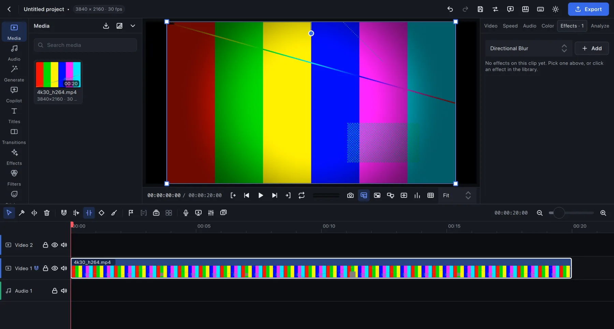

Where everything is
This is the TechieVideoEditor window. Choose a numbered area to see the features that live there and the steps to use each one; all features in all.

This is the TechieVideoEditor window. Choose a numbered area to see the features that live there and the steps to use each one; all features in all.
